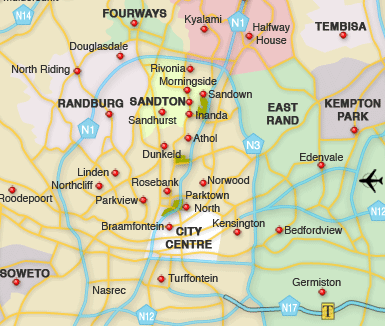

Publié le 18 octobre 2019
Mis à jour le 10 janvier 2020
Introduction
L’Afrique du Sud, une nouvelle histoire. Ce n’est que la seconde fois que je pars vivre à l’étranger après une année en Espagne lors de mes études. La distance et l’étonnement me poussent à écrire plus souvent dans ces moments-là, loin de mes proches. Paradoxalement, vous recevrez peut-être plus de nouvelles de moi depuis Johannesburg que lorsque j’étais en France, à Paris, à portée de main.
Je réitère donc ce que j’avais réalisé il y a quelques années lors de mon expatriation en Espagne et j’essaierai de vous envoyer de mes nouvelles de manière détaillée de temps en temps (je ne m’engage pas sur la régularité, on verra) et de vous présenter un peu ce merveilleux pays.
L’Afrique du Sud
Avant de commencer, quelques données sur l’Afrique du Sud. Je confesse que j’ai paresseusement copié-collé les données issues d’un guide, que j’ai un peu modifiées.
"Plus de vingt ans après la fin de l'apartheid, l'Afrique du Sud est confrontée à de multiples défis. Défi économique : le pays a été affecté par la crise de 2009, et tarde à renouer avec une croissance forte. Défis sociaux : avec la persistance du chômage massif et des inégalités, les tensions sociales s’aggravent, les problèmes de la criminalité et du sida demeurent. Défi politique : malgré sa légitimité historique, l'ANC (parti au pouvoir depuis la fin de l’apartheid) est aujourd’hui de plus en plus contesté, et en particulier la figure du l’ex-Président Zuma (impliqué dans de nombreuses affaires).
Nom officiel : République d’Afrique du Sud
Nature du régime : parlementaire
Chef de l’Etat : M. Cyril Ramaphosa (février 2018)
Superficie : 1.219.090 km2 (en comparaison, la France métropolitaine : 550.000 km2).
Population : 57 Millions avec un taux de croissance de la population compris entre 1,0 et 1,5% depuis 20 ans (contre environ 0,5% pour la France).
Villes principales : Johannesburg (3,2 M), Durban (3 M), Le Cap (2,9 M), East Rand/Ekurhuleni (2,4M.)
Plusieurs capitales : administrative (Pretoria) ; parlementaire (Le Cap) ; judiciaire (Bloemfontein)
Langues officielles : anglais (langue maternelle de 8,2 % des Sud-Africains), zoulou (23,8 %), xhosa (17,6 %), afrikaans (13,3 %), swazi, ndébélé, sotho du nord, sotho du sud, tswana, venda, tsonga-shangaan.
(Carte de l’Afrique du Sud avec les principales villes et le relief)
Monnaie : Rand sud-africain (ZAR). Le taux de change au moment où j’écris ces lignes : 1 ZAR = 0,06045 euros.
(Billet de 100 R avec ce cher Nelson Mandela, celui-ci est équivalent à 6 euros).
Atterrissage
Atterrissage le 8 octobre à 13h après une escale à Addis-Abeba. Température de 29°, pas un nuage dans le ciel. Nous récupérons facilement nos six énormes valises. Le choix des valises peut paraitre absurde. Les expatriés prennent souvent un container, soit aérien soit maritime, mais on nous a alerté plusieurs fois sur les délais d’arrivée des containers, parfois de plusieurs mois.
Sur la route de Johannesburg, ce qui me frappe d’abord c’est la verdure. Et pourtant, le conducteur nous dit qu’il n’a pas plu depuis le mois de mars ou d’avril. Même en pleine ville, il y a des arbres et des fleurs absolument partout. C’est vert, mais c’est aussi mauve, violet, de la couleur des Jacarandas, en fleurs à cette période de l’année. Ci-dessous, une photo issue d’un site internet, je me suis rendu compte que je n’avais pas de photo de Jacarandas car ici il est déconseillé de sortir son téléphone ou son appareil photo dans la rue, j’y reviendrai.
(Jacarandas en fleurs à Johannesburg)
Guest house à Parkview
Nous avons décidé, comme beaucoup de nouveaux arrivants, de loger dans une guest house (entre le AirBnb et l’hôtel). Internet, four, frigo, machine à laver… nous avons tout ce qu’il faut pour tenir quelques jours ou quelques semaines, le temps de trouver un appartement.
Le travail de Selen est situé à Braamfontein, un quartier proche du City Centre (cf. carte ci-dessous). Pour faire simple, et donc forcément, il faudrait nuancer, mais plus on est au sud, plus les quartiers sont dangereux. La ville est très étendue et les grandes entreprises, ainsi que la communauté française (avec le lycée français) sont situées au nord, autour de Sandton.
Après de nombreuses recherches sur internet, nous décidons de nous focaliser sur les quartiers autour de Rosebank et de Parktown North, qui constituent un très bon compromis au regard des différents critères (sécurité, services, temps de transports, galeries d’art…).

(Plan des principaux quartiers de Johannesburg)
Se déplacer
Ici, le seul moyen de transport conseillé est la voiture, même si dans certains quartiers, il est possible de se balader à pieds. Le Uber est un moyen de transport fiable. Il est simplement conseillé, pour des raisons de sécurité, de bien vérifier la plaque d’immatriculation et l’identité du conducteur, de ne sortir de chez soi que lorsque la voiture est arrivée et de ne se faire déposer que dans des lieux sûrs. Certains quartiers ne sont pas desservis par les Uber, notamment en raison d’une rivalité avec les taxis, qui se solde parfois par des coups de feu…. Les conducteurs ont l’habitude.
Si vous n’avez pas de voiture, tout se fait donc en Uber (le prix des trajets n’a rien à voir avec les prix parisiens). Nous attendons un peu de nous installer avant de réfléchir à la location ou l’achat d’une voiture, qui est parait-il indispensable ici (au moins pour sortir de la ville le week-end).
Le Gautrain, sorte de RER ultra moderne qui relie notamment Johannesburg et Pretoria (située à 60 km au nord) est le seul moyen de transport collectif fiable (il est géré par la RATP). Durant l’apartheid, le gouvernement n’organisait pas de transport public pour les noirs. Ils se sont donc organisés et ont mis en place des systèmes de navettes, sans itinéraire ni horaires précis, gérés par des associations rivales, avec parfois des affrontements territoriaux violents. Les minibus qui circulent dans la ville aujourd’hui sont l’héritage de ce système. Ils sont fortement déconseillés pour des questions de sécurité.
(Plan des lignes et carte du Gautrain, notre Pass Navigo à nous)
Météo
C’est sans doute le changement le plus agréable. Johannesburg est située en altitude (c’est très vallonné, mais environ 1700m, presque comme le Mont Mézenc en Haute-Loire). De ce fait, les températures varient fortement entre le jour est la nuit. Depuis 10 jours, il fait environ 30 degrés le jour et 15 degrés la nuit. Dès que le soleil se couche, une veste n’est pas de trop.
Mais le plus impressionnant, c’est l’absence d’humidité due au beau temps et à l’altitude. Le ciel est toujours bleu. Ici, c’est l’hiver et tous les sud-africains que j’ai rencontré (principalement des conducteurs Uber pour être honnête…) attendent avec impatience les premières pluies. La machine à laver sèche en 10 minutes, la nuit, on doit boire régulièrement pour ne pas être totalement desséché, la peau doit être hydratée régulièrement les premiers jours car elle n’a pas l’habitude.
Dimanche 12 octobre, alors que nous étions à une cérémonie de remise de prix dans un jardin magnifique dans le cadre du travail de Selen, il a enfin plu, pour la première fois depuis 6 mois. Des applaudissements et des sourires sont venus saluer cette bonne nouvelle. Il parait que pendant l’été (qui va bientôt commencer), les orages seront fréquents en fin de journée.
Johannesburg est situé très à l’est de Paris, approximativement à la même longitude que l’Ukraine. Et pourtant nous avons le même créneau horaire. Le soleil se lève donc très tôt, et se couche très tôt. Donc tous les matins, on se réveille vers 6h…. Autre particularité liée à l’autre hémisphère, les appartements les plus recherchés sont ceux qui sont exposés au Nord, et non au Sud.
Nourriture
Il n’y a pas grand-chose à dire pour le moment. Les vins sont réputés, à part ça, rien de très original. Impossible pour le moment de trouver du bio mais on va chercher une solution rapidement. Tous les aliments sont généreusement enrobés dans du film plastique… Bref, on n’a pas encore trouvé ce qui nous convenait.
Lectures
Parce que j’ai beaucoup de temps libre, je lis énormément. Depuis 2 ans, je ne lis plus qu’en anglais pour joindre l’utile à l’agréable et perfectionner mon niveau d’anglais. Je vous conseille vivement, si vous avez le temps, l’envie, la curiosité, de lire les 3 livres suivants (surtout si vous venez nous voir en Afrique du Sud).
A short history of South Africa (Gail Nattrass)
Pas si brève que ça puisque le livre fait 400 pages. C’est le premier livre que j’ai lu quand j’ai appris que nous partions en Afrique du Sud. Passionnant. L’auteure, professeure d’histoire, raconte de manière très précise et pédagogique tout ce qui a construit l’Afrique du Sud, depuis le berceau de la civilisation (Little Foot, le plus ancien fossile d'hominidé datant de 3,7 millions d'années, a été découvert non loin de Johannesburg) jusqu’à la période riche et complexe du post-apartheid.
A dry white Saison (André Brink)
Roman policier qui se déroule pendant les années d’apartheid. Le personnage principal est un professeur blanc ordinaire, pas très politisé. Il se retrouve soudainement confronté à la violence et l’injustice du gouvernement et de la police envers un homme noir travaillant dans son école, incarcéré puis retrouvé mort en prison dans des conditions suspectes. Il va peu à peu ouvrir les yeux sur la réalité de l’apartheid, et, malgré les intimidations, il va mener l’enquête.
Born a crime (Trévor Noah)
C’est l’autobiographie de Trevor Noah, un célèbre animateur de télévision sud-africain qui habite aux Etats Unis. Il est né d’un père suisse et d’une mère sud-africaine de l’ethnie Xhosa.
L'histoire
Dernière lecture conseillée : le dernier numéro Collections du magazine l’Histoire est consacré à l’Afrique du Sud. Il vient de sortir :
Cours d'anglais intensifs
Je me suis inscrit à 4 semaines de cours de perfectionnement en anglais. Je pensais être niveau intermédiaire (quand je me compare à certains amis), mais après le test fait le premier jour, je me suis retrouvé dans le meilleur des 5 groupes. 4h d’anglais tous les matins dans un groupe de 4 personnes et 1h d’anglais seul en début d’après-midi. Zéro problème de compréhension (les séries, les films et la lecture en anglais depuis des années ça aide). En revanche, encore des progrès à faire en expression, orale principalement pour être parfaitement fluent. Ce qui est sympa, c’est que sur les 20 élèves, de 20 à 40 ans, il y a 15 nationalités : une chinoise, un turc, une yéménite, une portoricaine, une brésilienne, un angolais… et nos profs sont anglais, australien, sud-africains.
Les débuts de Selen
A peine arrivée, Selen avait déjà un évènement le 8 octobre au soir, au théâtre. Les débuts se passent plutôt bien, elle fait connaissance avec son équipe et apprend rapidement à maitriser l’environnement institutionnel et culturel sud-africain.
Communauté française
L’un des grands pièges que nous voulions éviter en arrivant en Afrique du Sud est d’être des caricatures d’expatriés (peu ouverts, restant entre eux, barricadés…). Selen travaillant à l’institut français, nous allons forcément être en contact fréquent avec la communauté française. Et il ne faut pas tomber dans l’excès inverse non plus et s’interdire de voir tout français.
Le lendemain de notre arrivée, je participais à une soirée « Frenchies » organisé par Alain Samy, un contact que j’avais eu par un ami. Alain vit depuis 20 ans à Johannesburg et a créé l’association « Les Frenchies » qui organise des voyages, des diners, des visites… Alain a aussi une entreprise qui organise des virées pour les touristes dans les parcs (voir des lions, girafes etc.…) et une autre boîte qui s’occupe de trouver des apparts aux étrangers qui débarquent.
J’y rencontre 3 ou 4 personnes que je reverrai peut-être, au hasard des évènements. J’y rencontre aussi Aurore, une mère de famille qui est arrivée il y a quelques semaines. Elle est bénévole dans une association qui aide les expatriés français à trouver du travail (afterwork, formations, networking…). Elle me convie à leur apéro de rentrée la semaine suivante, à Sandton.
J’y retrouve Alain Samy, qui est vraiment partout. Il connait tout le monde et tout le monde le connait. Il n’y a que des femmes ! L’association qui organise l’évènement existe depuis plusieurs années et était auparavant réservée aux femmes. Depuis cette année, c’est ouvert aux hommes, et nous sommes 5 sur 45 participants. L’objectif de l’association est en réalité d’aider les conjointes (et maintenant les conjoints) de ceux (et celles) qui sont venus en Afrique du Sud pour le travail.
Je rencontre Jean-Marc, arrivé il y a 2 mois et qui travaillait chez Acadomia. On connait plusieurs personnes en commun. Ici, il revit. Il lit, il fait du sport, il apprend à jouer de la guitare.
Recherche d'appartement
Les loyers sont environ deux à trois fois moins chers qu’à Paris. Donc pour le même loyer, tu as quelque chose 3 fois mieux. Il y a trois types de logement. Les maisons sont les plus répandues. Contrairement à Paris, Johannesburg est une ville très étendue et les familles aisées vivent dans des maisons, avec jardin et parfois piscine. Dans les quartiers riches, chaque maison possède des clôtures électriques, un vigile, un chien, des barbelés, des détecteurs de mouvement… Tous les gens que j’ai rencontré ou presque vivent dans des maisons. Avoir un jardin est un luxe inaccessible dans n’importe quelle capitale européenne donc ici, ils en profitent, surtout s’ils ont des enfants. Il existe aussi des immeubles avec des appartements, qui ressemblent un peu plus à ce qu’on connait en Europe même s’ils sont en général plus modernes, car plus récents. Le gros avantage selon moi est que de nombreux services peuvent être mutualisés. Il y a parfois (très rare) une salle de sport pour les résidents, parfois un restaurant, un roof top, des salles de réunions, un bar… Nous pensons aussi que la sécurité y est plus facilement assurée. Enfin, il y a ce qu’on appelle des complexes, qui est un peu entre les deux, ce sont des maisons au sein d’un espace sécurisé, avec des services et des lieux communs.
Depuis le début, et malgré les nombreuses incitations à louer une maison, nous cherchons plutôt un appartement, pour des raisons de commodité et par envie également. Si possible meublé (rare), avec goût (très rare), avec 2 chambres et 2 salles de bains pour pouvoir vous accueillir dans de bonnes conditions.
Au cours de nos recherches, Alain Samy nous a mis sur la piste d’un appartement d’exception, meublé par un architecte d’intérieur. Je ne résiste pas au plaisir de vous montrer quelques photos. C’est un des plus vieux immeubles de Johannesburg, le Whitehall Court (regardez sur internet), dans lequel vivent des artistes et quelques célébrités. Nous n’avons finalement pas choisi cet appartement malgré un coup de cœur incroyable car il était un peu hors budget, n’avait qu’une salle de bain, pas de salle de sport dans l’immeuble et était moins bien situé que d’autres immeubles que nous visitions au même moment. La ville est tellement étendue que la localisation est un enjeu stratégique. Nous avons visité quelques appartements et sommes en train de trouver celui qui nous convient. À suivre.
Sécurité
Je ne pouvais pas terminer cette première lettre sans parler de la sécurité. Ici, c’est un sujet qu’on a toujours en tête. Quand tu arrives, tu es perpétuellement sur tes gardes, on te rabâche les oreilles longuement sur ce que tu peux faire, et surtout ce que tu ne peux pas faire. Impossible de se balader à pieds sauf dans certains quartiers et à certains horaires, impossible de prendre le bus, impossible de sortir son téléphone en terrasse d’un café, il faut une maison barricadée, avec vidéo, chien et vigile, ne pas s’arrêter au feu rouge lorsqu’une situation est suspecte….
Tout cela pèse. Évidemment, les vols et agressions, si on respecte quelques règles de base, ont très peu de chance de se produire. Mais c’est très particulier d’être toujours sur le qui-vive, de ne jamais baisser sa garde, d’avoir toujours en tête son intégrité et sa sécurité. C’est dans ces moments qu’on se rend compte de la chance qu’on a en France.
Les conseils de sécurité qu’on nous assène régulièrement sont terriblement stressants et culpabilisants. J’ai bien en tête que le but est de faire prendre conscience du risque et de la possibilité du pire, pour que personne ne prenne cela à la légère. Mais je trouve que le résultat peut être terriblement anxiogène pour certains (des dépressions, crises de paranoïa, envies de retour en France ou simplement si les gens continuent de sortir de chez eux après avoir vu et entendu toutes les histoires de meurtres, viols et attaques en tout genre).
En quelques mots, pour vous donner une idée. Les statistiques de criminalité de l’Afrique du Sud sont comparables à celle d’un pays en guerre. Pour 100.000 habitants, on dénombre 37 homicides par an (contre 1 pour 100.000 en France). Le car-jacking et le cambriolage sont des sports nationaux. Il y a de nombreuses armes en circulation et il en est fait un usage très décomplexé.
Évidemment, l’écrasante majorité de cette criminalité est concentrée dans les quartiers les plus défavorisés, qu’il faut éviter à tout prix. Mais la communauté d’expatriés n’est pas épargnée.
Il faut donc être en permanence sur ses gardes et respecter des règles élémentaires de bonne conduite, qui relèvent du bon sens : ne pas se fier au GPS, ne pas conduire de nuit, ne pas marcher dans la rue, ne pas attirer l’attention, ne pas sortir son téléphone dans la rue, ni ses bijoux ou sa Rolex, fermer les fenêtres en voiture, vérifier l’immatriculation du Uber.
On nous donne également des conseils en cas d’agression, sur l’attitude à adopter. On peut les résumer en une phrase : « Donnez et coopérez, votre vie est plus importante que votre IPhone, que votre voiture et que votre porte-monnaie réunis ».
Malgré tout cela, on espère que vous viendrez nous rendre visite, car c’est génial ici !
Bises.